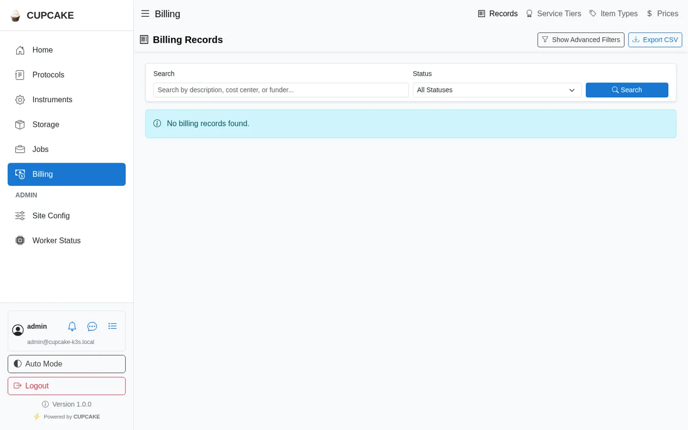
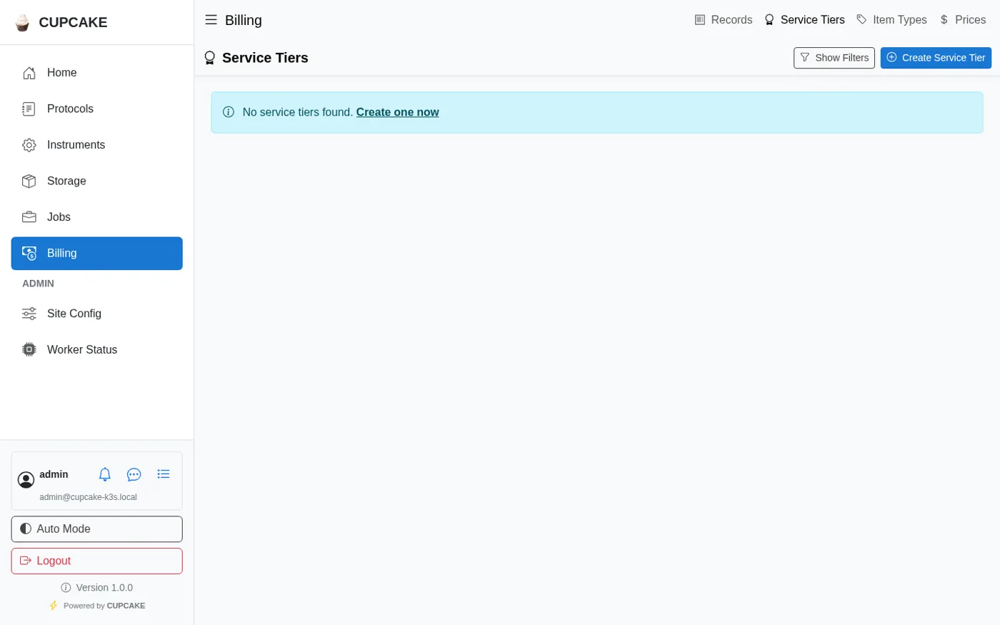
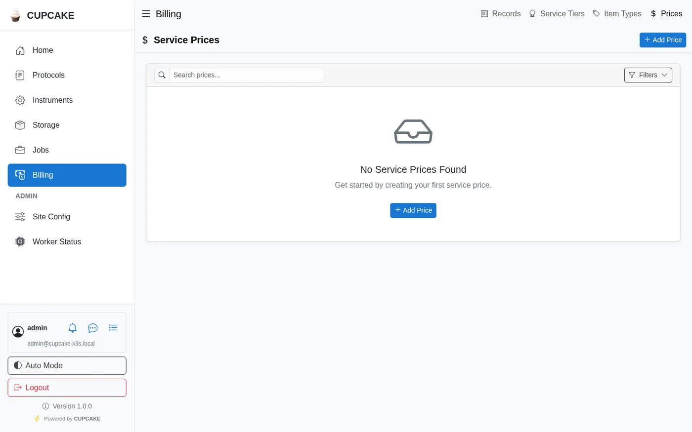

- Records lists billing records by status (pending, approved, billed, paid, disputed, cancelled), cost centre, funder and period. Select records to approve them, or export them as CSV.
- Service Tiers sets tiers such as standard or premium, with a price multiplier, a discount, and booking limits.
- Item Types are what is billed, such as instrument time, with a default unit and whether records need approval.
- Prices sets the price of each item type for each tier: base price, currency, unit, minimum charge, setup fee, bulk discount and the period it applies to.



A quote for a service is worked out from an instrument, a tier, an item type and a quantity, and downloaded.